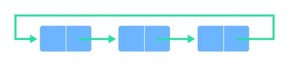
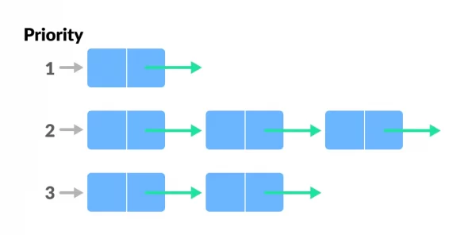

Queue
Pernahkah kamu penasaran bagaimana sistem notifikasi di aplikasi yang kamu gunakan bekerja di balik layar? Dalam banyak aplikasi, pesan atau notifikasi sering kali harus diantrekan dan diurutkan sesuai dengan urutan kirim atau prioritas. Proses tersebut umumnya menggunakan struktur data queue. Dalam artikel ini, kita akan membahas apa itu queue beserta dengan contoh sederhana penerapannya.
Pengertian Queue
Queue atau dalam bahasa Indonesia yang berarti antrean adalah struktur data yang menyusun elemen-elemen data dalam urutan linier. Prinsip dasar dari struktur data ini adalah “First In, First Out” (FIFO) yang berarti elemen data yang pertama dimasukkan ke dalam antrean akan menjadi yang pertama pula untuk dikeluarkan.
Prinsip FIFO pada Queue
Caranya bekerja adalah seperti jejeran orang yang sedang menunggu antrean di supermarket di mana orang pertama yang datang adalah yang pertama dilayani (First In, First Out). Pada struktur data ini, urutan pertama (data yang akan dikeluarkan) disebut Front atau Head. Sebaliknya, data pada urutan terakhir (data yang baru saja ditambahkan) disebut Back, Rear, atau Tail. Proses untuk menambahkan data pada antrean disebut dengan Enqueue, sedangkan proses untuk menghapus data dari antrean disebut dengan Dequeue.

Fungsi Queue
Queue memiliki peran yang penting dalam berbagai aplikasi dan algoritma. Salah satu fungsi utamanya adalah mengatur dan mengelola antrean tugas atau operasi secara efisien. Dalam sistem komputasi, ia digunakan untuk menangani tugas-tugas seperti penjadwalan proses, antrean pesan, dan manajemen sumber daya.
Jenis-jenis Queue
Jenis struktur data ini dapat diklasifikasikan berdasarkan cara implementasinya, maupun berdasarkan penggunaannya. Di antara jenis-jenis tersebut adalah sebagai berikut.
- Berdasarkan Implementasinya
- Linear/Simple Queue
Elemen-elemen data disusun dalam barisan linear dan penambahan serta penghapusan elemen hanya terjadi pada dua ujung barisan tersebut.

- Circular Queue
Mirip dengan jenis linear, tetapi ujung-ujung barisan terhubung satu sama lain, menciptakan struktur antrean yang berputar.

- Linear/Simple Queue
- Berdasarkan Penggunaan
- Priority Queue
Setiap elemen memiliki prioritas tertentu. Elemen dengan prioritas tertinggi akan diambil terlebih dahulu.
 - Double-ended Queue (Dequeue)
Elemen dapat ditambahkan atau dihapus dari kedua ujung antrean.

- Priority Queue
Keuntungan dan Keterbatasan
Meskipun struktur data queue memiliki banyak kegunaan, kamu juga harus mengetahui beberapa keuntungan dan keterbatasan yang perlu diperhatikan sebelum menggunakannya.
- Keuntungan
Data berjumlah besar dapat dikelola dengan mudah dan efisien.
Proses insert dan delete data dapat dilakukan dengan mudah karena mengikuti aturan first in first out (FIFO).
Efisien dalam menangani tugas berdasarkan urutan kedatangan.
- Keterbatasan
Tidak efisien untuk pencarian elemen tertentu dalam antrean.
-
Memerlukan alokasi memori yang cukup untuk menyimpan antrean.
Operasi Dasar Struktur Data Queue
Secara umum, struktur data queue memiliki 2 operasi utama, yaitu enqueue dan dequeue. Namun, ada beberapa struktur data abstrak lainnya yang dapat terjadi pada operasi tersebut, diantaranya adalah :
- Enqueue,
untuk menambahkan elemen ke akhir antrian
- Dequeue
untuk menghapus elemen dari depan antrian
- IsEmpty
untuk memeriksa ada tidaknya antrian kosong
- IsFull
untuk memeriksa kepenuhan antrian
- Peek
untuk mendaptkan nilai bagian depan antrian tanpa menghapusnya
- Initialize
untuk membuat antrian baru tanpa elemen data
Fungsi Struktur Data Queue
Beberapa fungsi umum dari struktur data queue adalah sebagai berikut, yaitu :
- Untuk menangani lalu lintas di situs website
- Untuk mempertahankan playlist pada aplikasi media player
- Untuk menangani interupsi pada sistem operasi
- Untuk melayani banyak permintaan pada satu sumber daya bersama, misalnya printer dan penjadwalan tugas CPU
- Untuk mentransfer data asinkronus, misalnya pipeline, IO file, dan socket
Contoh Struktur Data Queue
Struktur data queue dapat anda lihat terapannya pada kehidupan sehari-hari, misalnya saat melakukan pembelian tiket kereta api, tiket bioskop, tiket kapal laut, pembayaran listrik, pembayaran air, dan sebagainya. Misalnya saja dalam pembelian tiket di bioskop, dimana :
- Enqueue diibaratkan seperti seseorang yang ingin membeli tiket bioskop di loket tiket
- Dequeue diibaratkan seperti seseorang yang sudah membeli tiket bioskop dan menuju studio filmnya untuk dilakukan pemeriksaan tiket
- Clear diibaratkan seperti petugas yang menghapus tiket dari antrian karena sudah melewati waktu menonton atau waktu pembayaran administrasi
- IsEmpty diibaratkan seperti petugas yang melihat keadaan sekitar bahwa sudah tidak ada lagi pengunjung yang ingin membeli tiket
- IsFull diibaratkan seperti petugas melihat masih ada pembeli yang ingin mendapatkan tiket bioskop
Kesimpulan
Pemahaman tentang struktur data queue menjadi kunci untuk mengoptimalkan efisiensi dan kinerja aplikasi. Artikel ini telah menjelaskan bahwa ia adalah struktur data yang mengatur elemen-elemen data dengan prinsip “First In, First Out” (FIFO), serupa dengan antrean di kehidupan sehari-hari. Kita juga telah mempelajari fungsi, jenis-jenis, beserta kekurangan dan kelebihannya.
Kita juga telah melihat contoh implementasi sederhananya, memperlihatkan bagaimana struktur data ini dapat digunakan dalam konteks antrean pelanggan pada kasir. Dengan pemahaman ini, semoga kamu dapat mengimplementasikan konsep struktur data yang tepat dalam proyek-proyek aplikasi yang kamu kembangkan sehingga dapat meningkatkan efisiensi aplikasi dan juga menjadi seorang Software Engineer yang lebih andal.